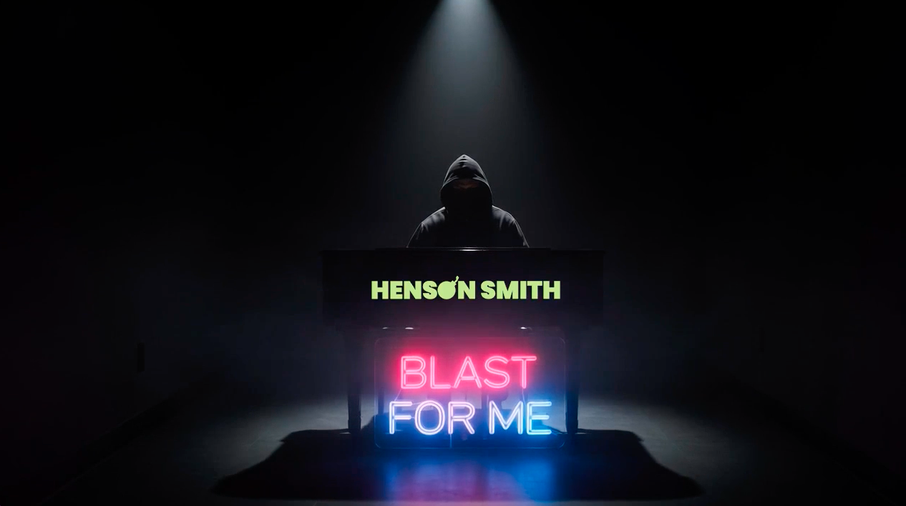
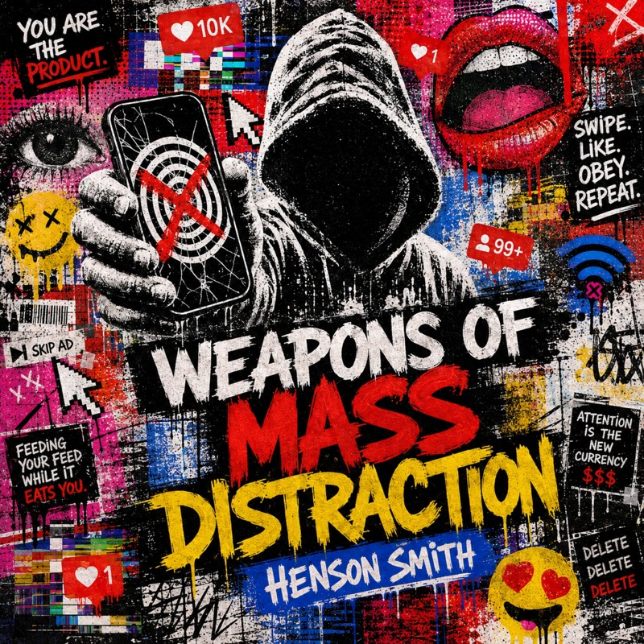
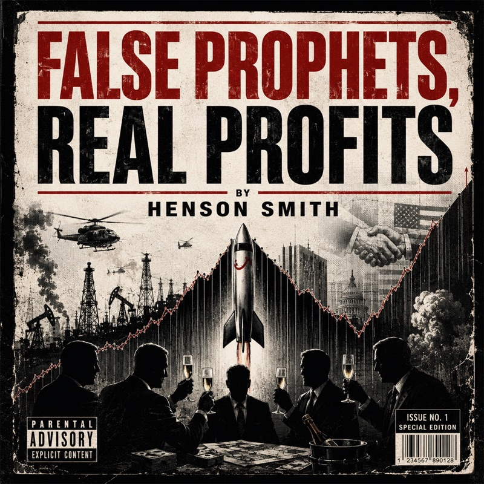
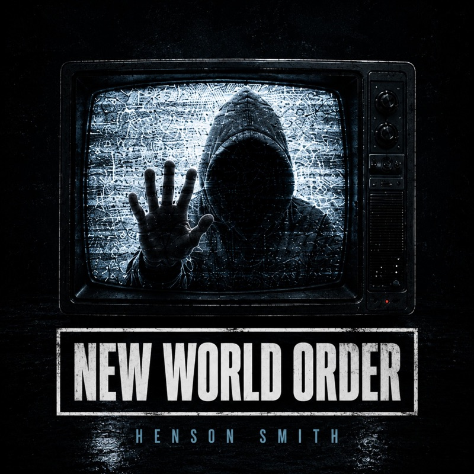
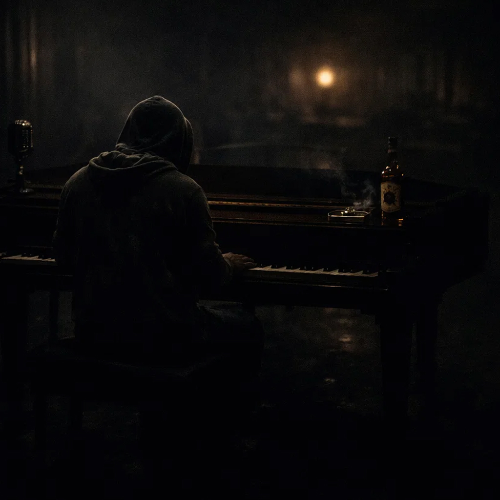

HENSONSMITH
HIP-HOP WITHOUT A FIXED FORM.
ALBUMS. SINGLES. STORIES.
THE VOICE. THE MUSIC.
EVERYTHING IN BETWEEN.
SCROLL TO LISTEN ↓
01 / THE MUSICALBUMS · SINGLES · MORE
TURN IT UP.
Albums, singles and stories from Henson Smith. Old-school hip-hop foundations, soul and jazz influences, and lyrics worth a second listen.
THE ALBUM / 2026
FEATURED ALBUM · LISTEN IN FULL
MINDFIELD.
Mindfield is the current featured album. Press play, find a track, and explore the sound beyond any one subject or style.
TRACK LISTING 24 TRACKS / EXPAND +
SINGLES + ALBUM CUTS
FIND YOUR TRACK.
SWIPE OR SCROLL TO EXPLORE / 7 RELEASES

Weapons of Mass Distraction
MANIFESTO / SINGLE
False Prophets, Real Profits
MANIFESTO / SINGLE
New World Order
MANIFESTO / SINGLEOutta My Mind
MINDFIELD / ALBUM TRACKRound Two
MINDFIELD / ALBUM TRACKBy Design
MINDFIELD / ALBUM TRACK02 / WATCHOFFICIAL VIDEOS · PLAY IN PAGE
PRESS PLAY.
Official videos from across the catalogue. Different songs, different worlds, all Henson Smith.
03 / INSIDE MINDFIELDFIVE ROUNDS. ONE JOURNEY.
THE CHAPTERS BETWEENGO ANOTHER
GO ANOTHER
ROUND.
The Rounds are Mindfield’s chapter interludes: moments to reset, shift perspective, and step into the next part of the record. Follow all five through the album, or drop into a chapter below.
04 / HENSON SMITHABOUT THE ARTIST

THE VOICE, NOT THE FACENO FACE.
NO FACE.
ALL SOUND.
Henson Smith makes hip-hop rooted in old values, drawing on soul, R&B and jazz. Sometimes personal, sometimes confrontational, always driven by the music.
The hood isn't the story. The songs are.
“I AM NO-ONE. I AM EVERYONE.”
HIT PLAY.
Find a song. Hear a preview. Take the full track to your favourite service.
HS / STEREO
MINDFIELDROUND ONE
Choose a track to hear its available preview.
No tracks match your search.